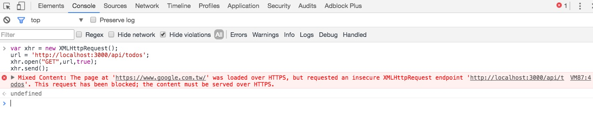
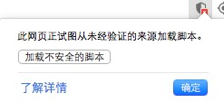
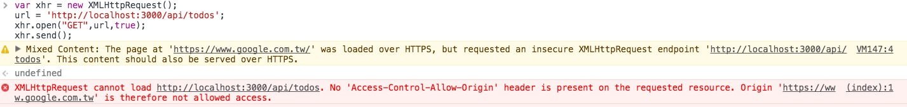

浏览器Mixed Content
2017-02-26
留言
浏览器Mixed Content
之前做了一个简单的Chrome插件，用于hook Ajax请求，从而拿到页面内容，可以用来爬取数据。
但是，当我服务端API配置好跨域规则，在一个HTTPS的网站准备实现时，却发现有一个错误：

Mixed Content，那么这又是个什么问题呢？
|
|
我们知道，使用HTTPS，有很多好处，加密啦，认证啦，什么什么的。那么浏览器(浏览器开发者)
就会想，如果你在一个HTTPS的页面中请求了一个HTTP的资源，就会有安全风险，
这就是Mixed Content错误的来源。
这里我最感兴趣的是XMLHttpRequest，因为这个玩意可以执行指令，下面就试试能不能绕过这个Mixed Content
Google之，发现需要以允许不安全的方式启动Chrome
|
|
下一步，启动一个简单的HTTP接口，用来接收Ajax请求，在Google的网站上，发送一个Ajax请求给这个接口,
然后点击右上角的图标：

选择加载不安全的脚本，然后页面会重载一次：

就可以绕过Mixed Content，但是自动化的实现绕过Mixed Content，貌似不可行。
参考：
https://developer.mozilla.org/zh-CN/docs/Security/MixedContent
https://developers.google.com/web/fundamentals/security/prevent-mixed-content/what-is-mixed-content
http://stackoverflow.com/questions/18321032/how-to-get-chrome-to-allow-mixed-content---